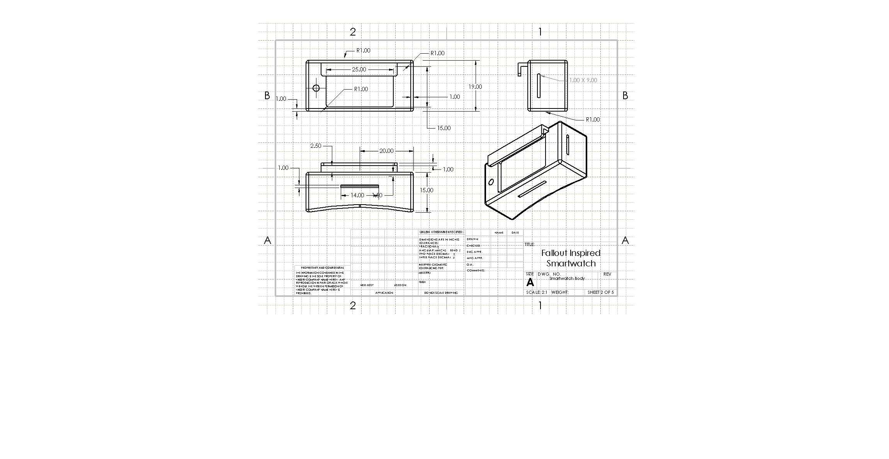
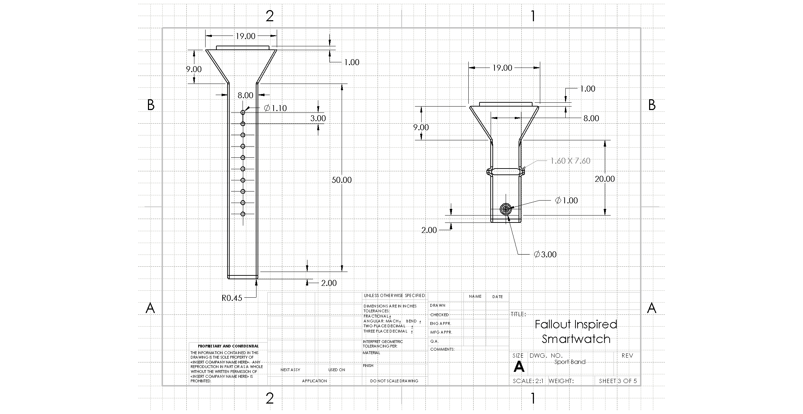
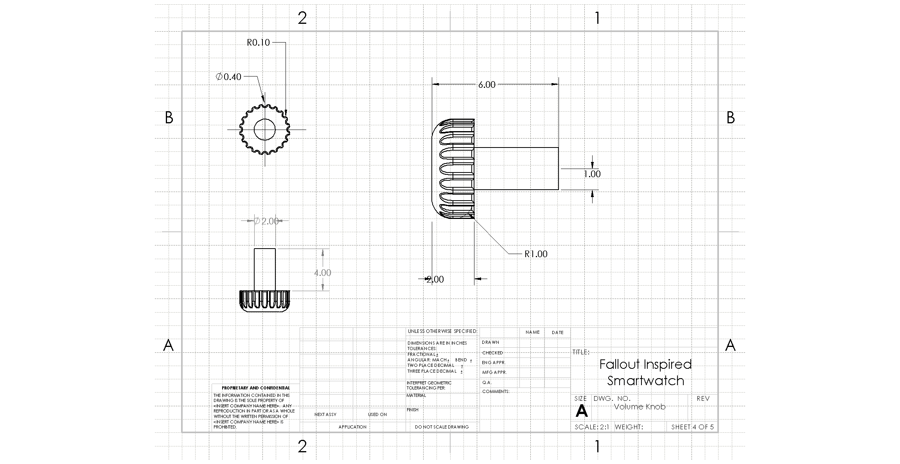
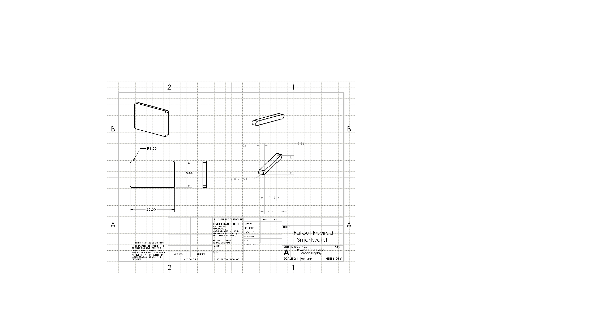

CAD
Mechanical concepts and product studies.
These projects focus on form, tolerancing, product narrative, and the kind of design decisions that turn a simple idea into something you can touch.
Fallout-inspired smartwatch
A wrist-mounted concept modeled in SolidWorks with a chunky body, industrial controls, and a retro-inspired interface language.
Drag to rotate · scroll the page as normal
25 × 19 × 15
Housing dimensions (inches)
5
Drawing sheets
2:1
Drawing scale
R1.00
Housing fillet radius (inches)
Drawing sheets
Sheet export pending




Practice · Fundamentals
Mechanical design & product engineering
- Built SolidWorks models of consumer-electronics-inspired geometries (AirPods housings, iPhone case profiles) to develop foundational skills in 3D CAD, enclosure design, and parametric modeling.
- Created 2D drawings and basic blueprints, applying introductory GD&T concepts, dimensional constraints, and material annotations.
- Practiced core DFM/DFA principles such as draft angles, wall-thickness awareness, simple snap-fit geometries, and part simplification for manufacturability.
- Developed beginner-level tolerance awareness through iterative sketch constraints, fit/clearance adjustments, and multi-body part interactions.
- Explored basic mechanical analysis concepts — stress concentration, deformation risk, drop-impact considerations — to understand failure modes in enclosure designs.
- Designed and printed 3D models using Tinkercad and consumer-grade 3D printers, gaining hands-on experience with prototyping workflows and physical part evaluation.